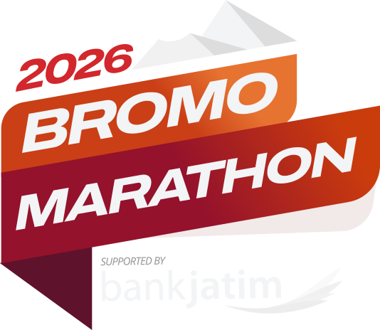

💌 mengajakmu menyemangati AyahKirim semangat →
Event lari · Pasuruan, Jawa Timur
BromoMarathon 2026
Half Marathon 21KSabtu, 21 November 2026Start 06:30 WIB
Setengah maraton di kaki Gunung Bromo, di ketinggian 1.783 sampai 2.468 meter. ED Club mengirim satu wakil ke garis start: Alfan, yang biasa dipanggil Ayah.
Satu pagi,
21 kilometer.
Kenalan dengan
Alfan.
ED
Wakil ED Club
Alfan (Ayah)
Pelari yang membawa nama English Day Social Club ke Bromo Marathon 2026, di kategori Half Marathon 21K.
- ED Club
- 21K · 20,91 km
- Bromo, Pasuruan
BROMO MARATHON 2026ED CLUB
21KHALF MARATHON
Alfan“Ayah” · English Day Social Club
Langsung
0
orang sudah menyemangati Ayah
0total klik semangat
0pesan untuk Ayah
Level 1 · Pemanasan
Semangat 24 jam terakhir
24 jam lalusekarang
Peta 3D
Naik ke 2.468 meter,
Naik ke 2.468 meter,
turun ke Wonokitri.
- Jarak
- 20,91 km
- Tertinggi
- 2.468 m
- Terendah
- 1.783 m
- Tanjakan
- ±980 m
Jarak0,0km
Ketinggian1.840m
Kemiringan0%
Profil ketinggian
Geser grafik di atas untuk melompat ke titik mana pun di rute.
Dari turunan ke tanjakan,
lalu pulang.
- 01
Start: Plataran Bromo
Lomba dimulai pukul 06:30 WIB dan langsung turun dari ketinggian sekitar Plataran Bromo.
- 02
Tanjakan: Pinggiran Ngadiwono
Rute mulai menanjak melewati pinggiran Ngadiwono.
- 03
Jalur batu: Menuju Pandansari
Berlanjut di jalan berbatu yang menanjak ke arah Pandansari.
- 04
Hutan: Dekat Mororejo
Sekitar 3 km menembus jalur hutan, bagian paling teknis dari rute.
- 05
Finish: Wonokitri
Kembali ke aspal dan jalan desa, lalu masuk Wonokitri tempat garis finish menunggu.
Rute di peta ini berasal dari tautan rute 21K di situs resmi Bromo Marathon (20,91 km). Jadwal, titik start dan finish, serta aturan lomba bisa berubah, jadi selalu cek situs resmi dan panduan peserta.
Perlengkapan
pelari.
- Rompi atau sabuk lari
- Minimal 1 liter air (soft flask atau bladder)
- Camilan atau energy bar
- Ponsel dengan berkas GPX
- Obat pribadi
- Jas hujan anti air, atau windbreaker plus jas hujan tipis
- Peluit darurat
- Buff atau penutup leher
- Nomor dada (BIB)
- Kartu identitas (KTP)
ED Club→ Event berikutnyaED Fun Run Vol. 1→
Pesan untuk Ayah
Papan semangat segera aktif. Angka dan pesan akan muncul di sini.
Belum ada pesan. Jadilah yang pertama menyemangati Ayah!